A 5-DOF arm
Reaches, grips and operates hardware at the end of a moving rover.
Team MARS's 4th-generation Mars rover: it drives rough terrain, works an equipment panel with its arm, and drills and analyses soil on board. I was Team Captain and led its mechanical development.
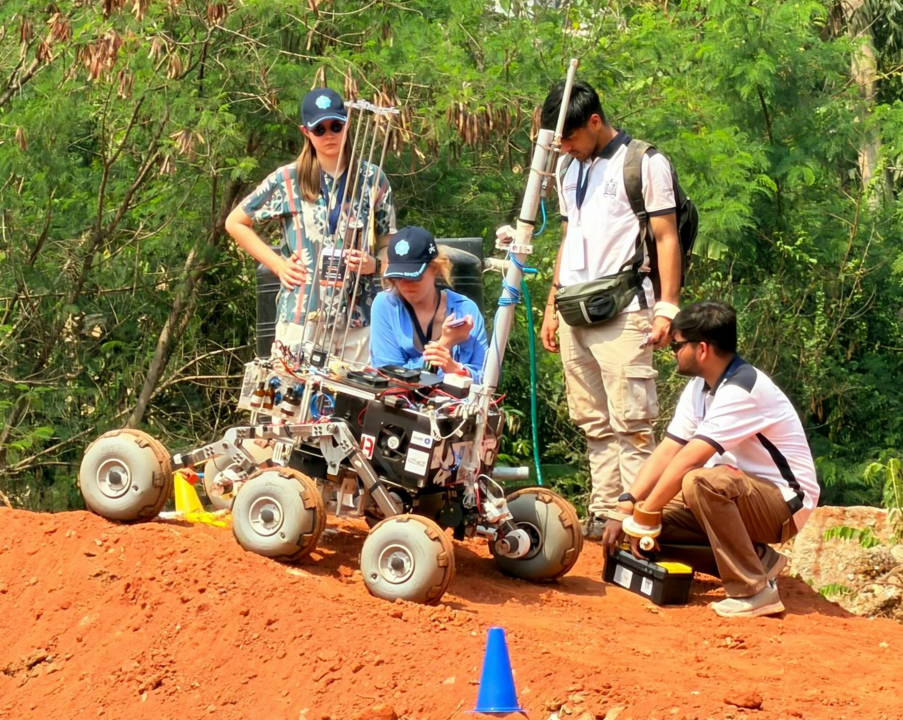
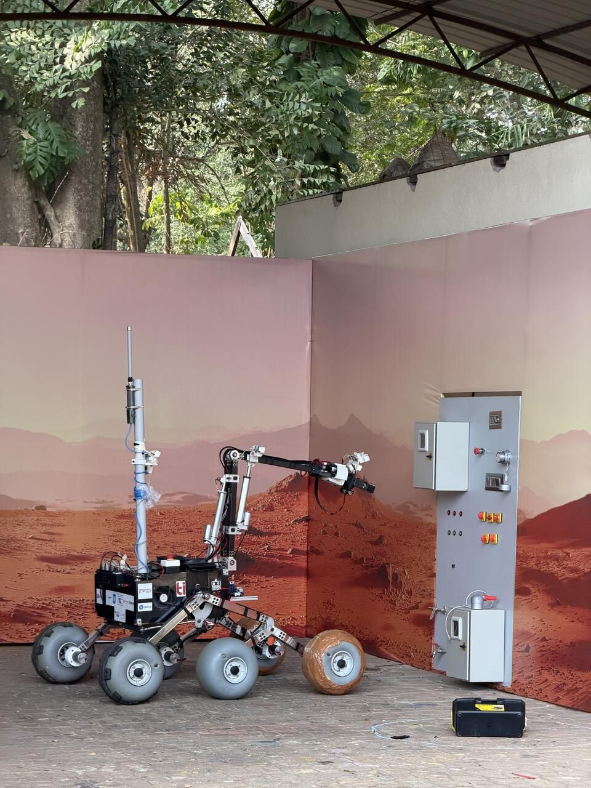
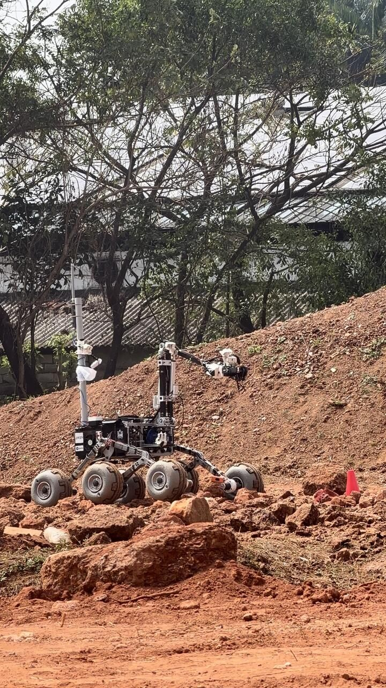
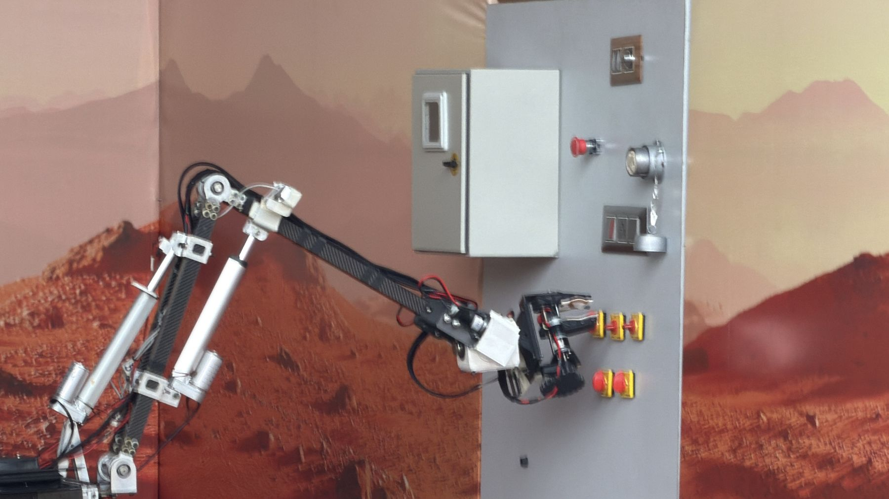
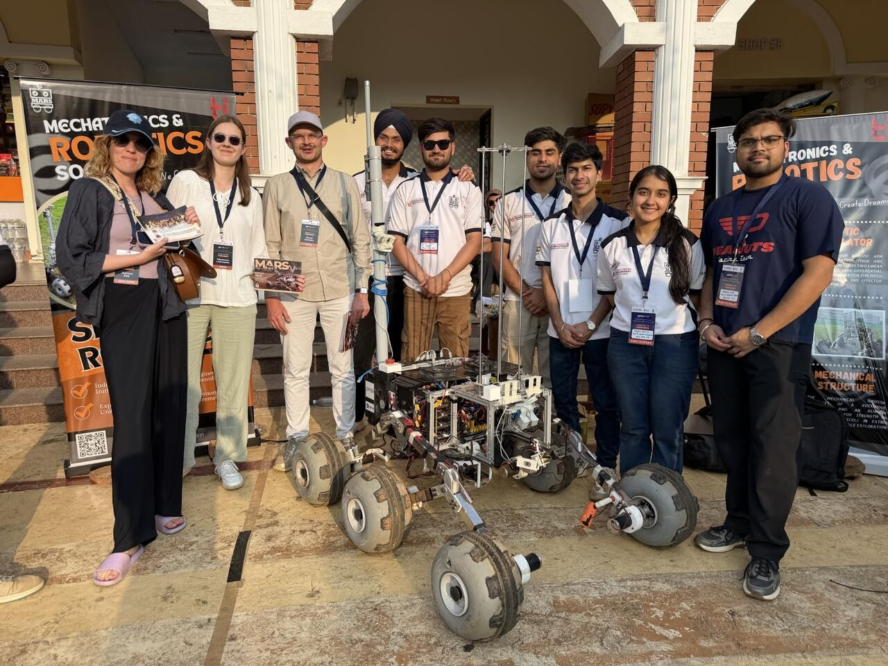
Reaches, grips and operates hardware at the end of a moving rover.
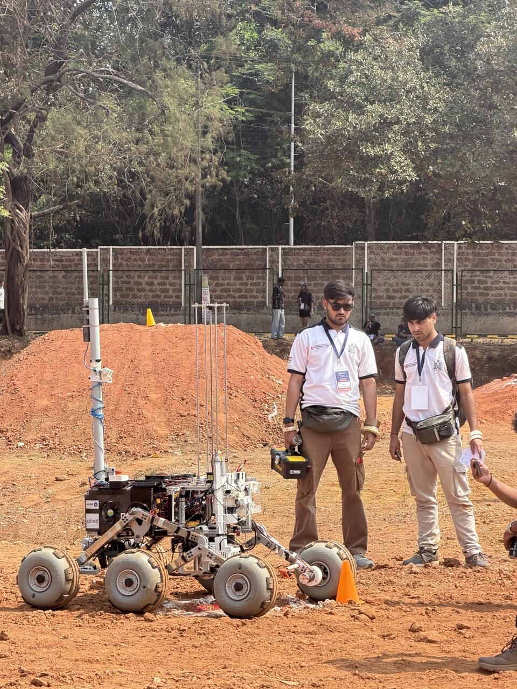
Drills into the ground and analyses the soil on board. Second best in the ABEx category; written up for IPRoMM 2026. Where it began →
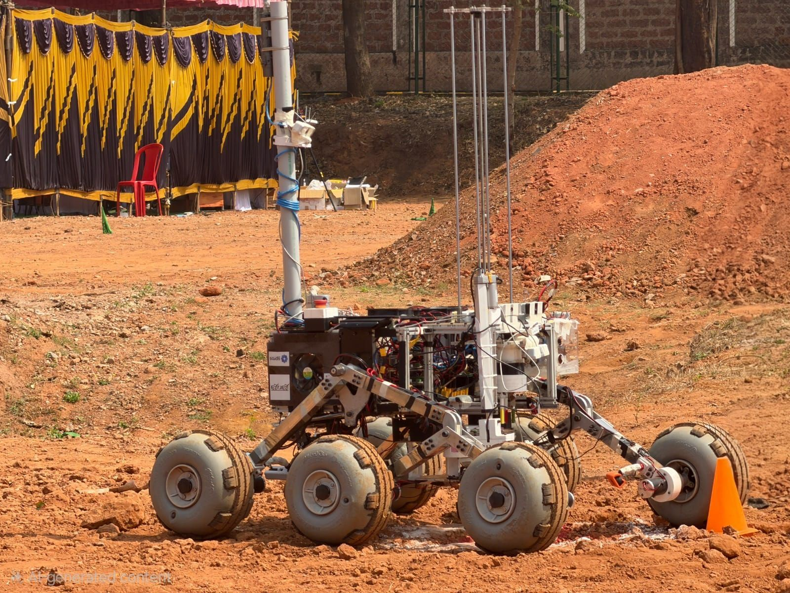
PU wheels from Wheeleez, Australia, for grip on loose, rocky ground.
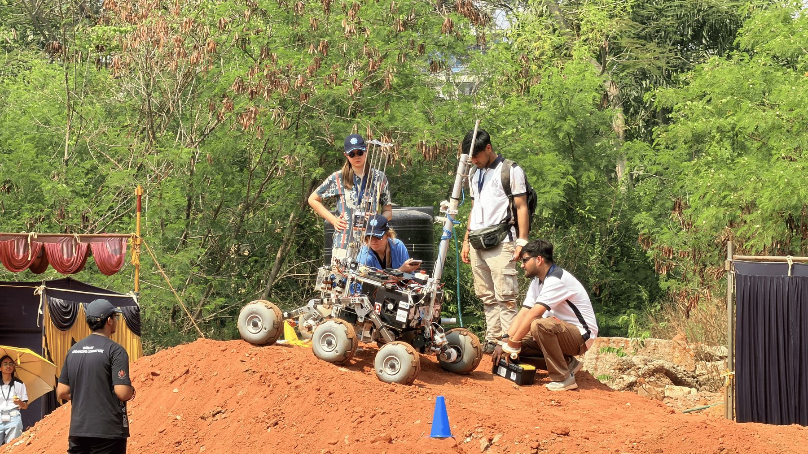
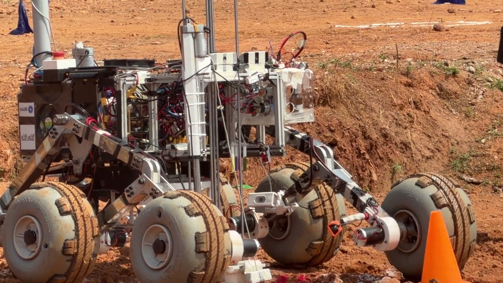
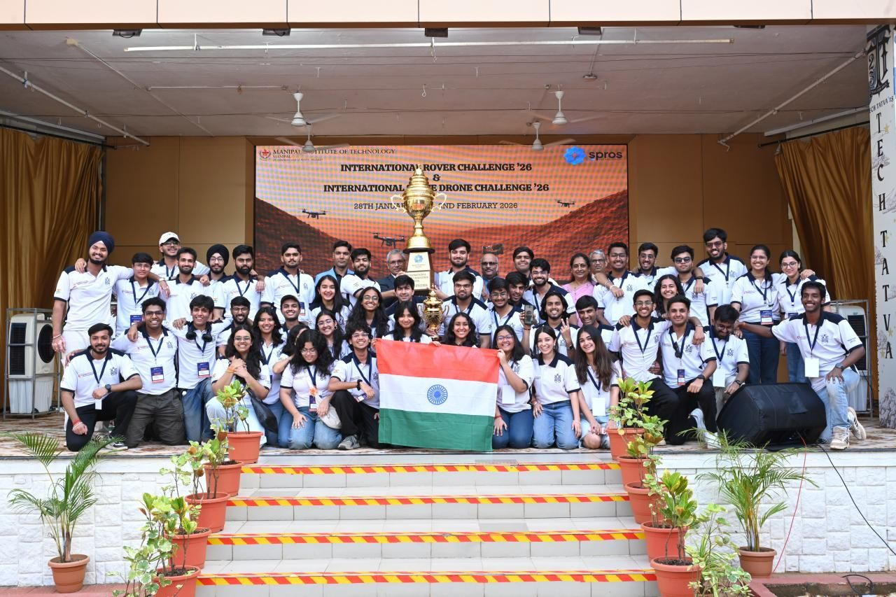
International Rover Challenge 2026, SPROS · MIT Manipal.
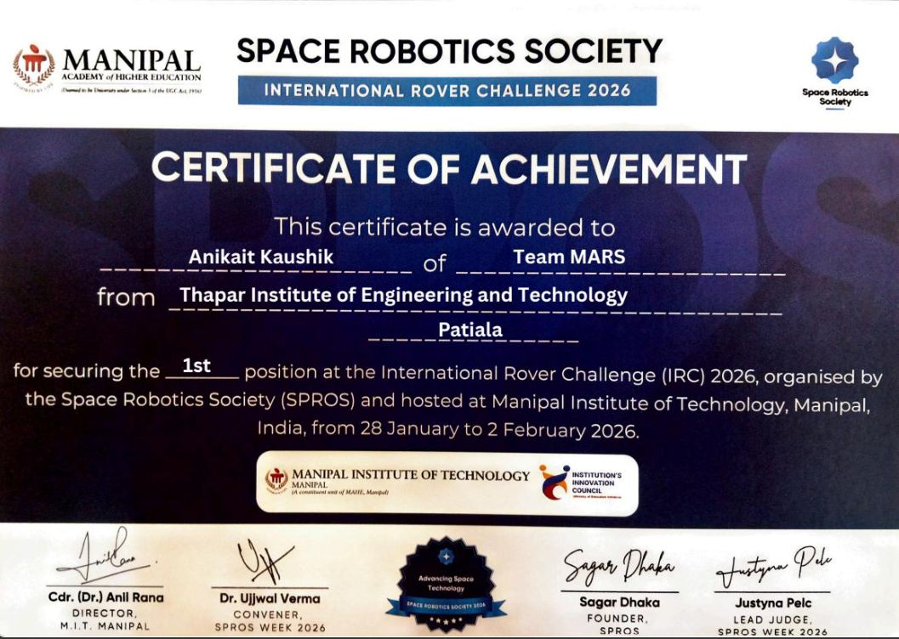
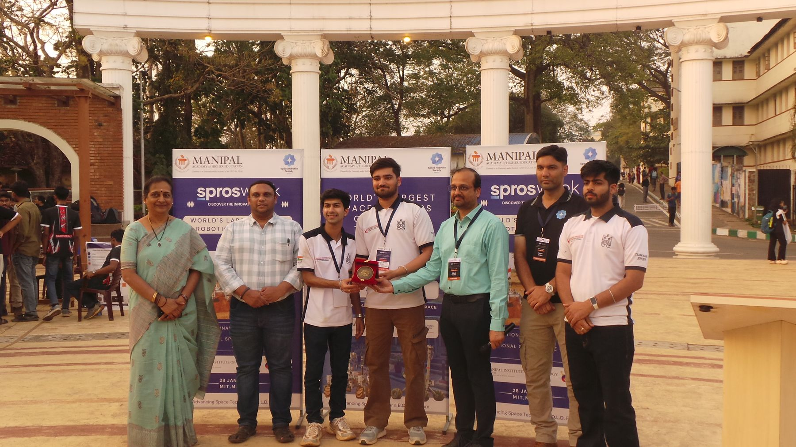
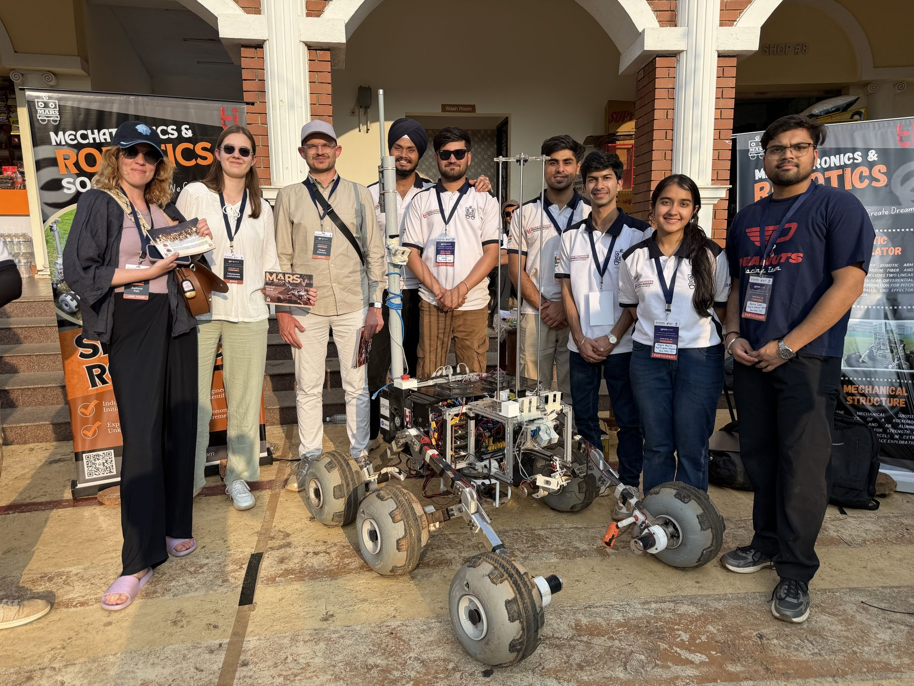
I oversaw the arm, the sampling system and the wheel integration, and brought them together into one rover that could take the field. Mentors: Prof. Ashish Singla and Dr. Sachin Kansal.